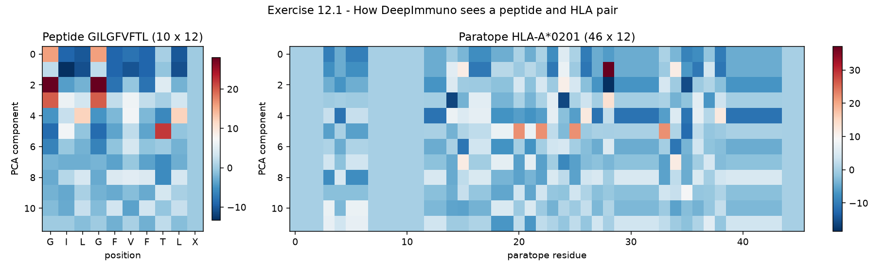
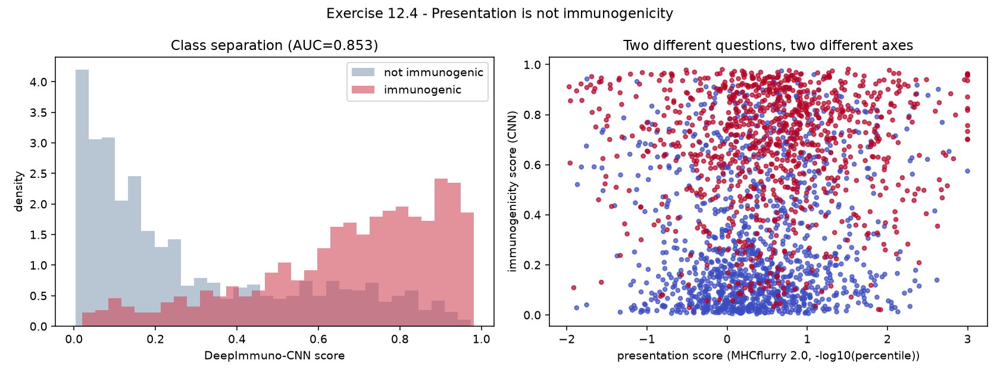
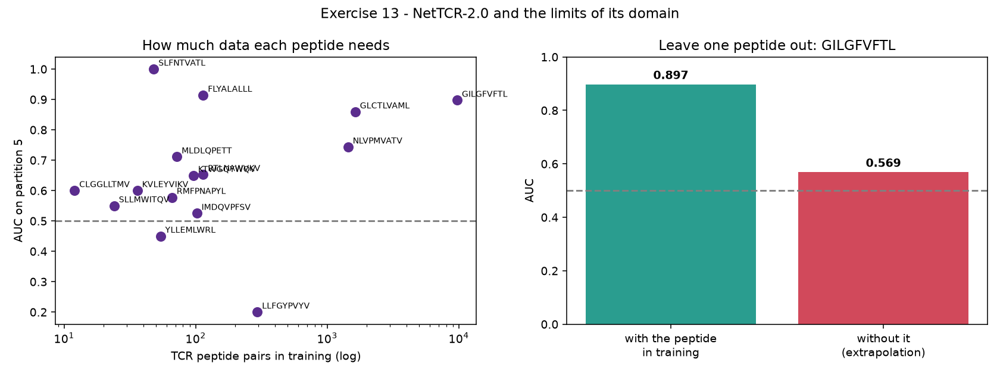
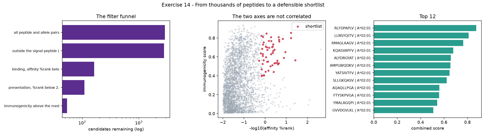

ISCB-LATAM 2026 · Tutorial IP3 · Module M03
Results of the immunoinformatics practical, slides 18 to 24. Each section takes one claim from the presentation and turns it into a number that can be reproduced. Case study: FhaC of Bordetella pertussis, the same protein as the structural module.
Three commands. Works on Linux, on macOS and in a GitHub Codespace opened from the tutorial repository.
installs packages, fetches the MHCflurry weights and the public datasets
runs the whole workflow on fhaC, trains nothing, a few minutes
results/topology_reference.csv per residue reference for fhaC
results/ex14_shortlist.csv the ranked candidate list
results/ex14_full_table.csv every peptide and allele pair
results/ex14_prioritization.png the funnel and the ranking
The licensed tools are the exception. NetMHCpan, NetMHCIIpan, SignalP 6.0 and DeepTMHMM need
an academic licence from DTU and a manual install, so they cannot run in a Codespace. Their
outputs for FhaC are committed in data/precomputed, so no exercise is blocked by a
missing tool. RUNBOOK.md in the repository gives the input, the command, the output
and the meaning for every step.
A signal peptide says where the protein goes, not whether it is antigenic.Orange box, slide 18
Running SignalP and DeepTMHMM is easy. Knowing whether to believe them needs something to compare against. The reference here is the curated UniProt annotation of P35077, much of it derived from a solved structure.
DeepTMHMM was run offline on FhaC with the DTU academic package. It calls the protein a beta barrel, predicts a signal peptide ending at residue 32 against the curated 30, and finds exactly the same number of membrane strands.
Raw per residue agreement is 47.3 percent. Agreement on the question the reference can actually answer, strand or not strand, is 88.4 percent. The gap exists because UniProt does not label inside versus outside, so every residue DeepTMHMM correctly calls periplasm is scored as a mismatch. Two numbers, one comparison, and only one of them is honest.
[reference] UniProt P35077 curated annotation
signal peptide 1-30
domain 89-164 POTRA
transmembrane 16 beta strands, from 242 to 584
[question 1] Does fhaC enter the secretory pathway?
DeepTMHMM also predicts a signal peptide, ending at 32.
UniProt annotates it ending at 30.
difference: +2 residues
[question 2] Is it a membrane protein, and which way round?
label counts: {'S': 32, 'P': 272, 'B': 138, 'O': 142}
predicted beta strands: 16
UniProt beta strands : 16
raw per residue agreement: 47.3%
That number looks poor, and it is misleading.
agreement on the strand or not strand question: 88.4%
Real output. The two agreement figures describe the same comparison, and only the second one is honest.
What this rules out. The first 30 residues are cleaved during secretion, so 22 of the 576 nine-mers never exist in the mature protein. That is the first filter of the whole pipeline, and it comes from slide 18 rather than from any binding predictor.
A predictor scores one peptide against one HLA allele. It does not model the proteasome, TAP, or the endolysosomal route.Orange box, slide 20
Three independent tools were run over the same FhaC peptides: MHCflurry 2.0, MixMHCpred 2.2 and PRIME 2.0. The agreement between them is the most convincing result in the module.
| Peptide | Position | Allele | Found by |
|---|---|---|---|
| RPGLVGRAL | 9–17 | B*07:02 | MHCflurry and MixMHCpred |
| LLNSYQITV | 465–473 | A*02:01 | all three |
| RLFDPAPLV | 103–111 | A*02:01 | MHCflurry and the combined ranking |
| LYINAGLSF | 576–584 | A*24:02 | MHCflurry and MixMHCpred |
| YATSIVTFV | 140–148 | A*02:01 | MHCflurry and the combined ranking |
Different architectures entirely. MixMHCpred is position weight matrices from motif deconvolution, not a neural network, which is exactly the contrast slide 21 draws.
wrote results/mhcflurry_class_I.csv (6906 rows)
start length peptide allele affinity_nM affinity_percentile call
9 9 RPGLVGRAL HLA-B*07:02 13.54 0.002 SB
465 9 LLNSYQITV HLA-A*02:01 11.68 0.037 SB
140 9 YATSIVTFV HLA-A*02:01 25.92 0.131 SB
103 9 RLFDPAPLV HLA-A*02:01 14.94 0.059 SB
576 9 LYINAGLSF HLA-A*24:02 31.68 0.045 SB
calls across all 6906 rows: SB 60 WB 179 NB 6667
Read the %rank column, not the nM value. Slide 21 sets strong binder below 0.5 and weak binder below 2 for class I.
Pending from the team. NetMHCpan and NetMHCIIpan results are not on this page yet, because those tools need a DTU academic licence and were not run here. The wrappers are ready and the commands are in the runbook. Once the output CSVs exist they drop straight into the comparison above.
Class II matters more than it looks for this antigen. fhaC is an extracellular protein, so its natural route is endocytosis and presentation to CD4 T cells.
A strong binder is not necessarily immunogenic.Orange box, slide 22
DeepImmuno-CNN was reimplemented and trained on the 9,055 IEDB peptides the paper uses. The split separates by peptide, so no peptide appears in both training and test.
Two models ordering the same peptides almost independently. Knowing a peptide sits well in the MHC groove says very little about whether it will wake a T cell.


The nuance worth the discussion. Of the 20 best presented peptides in the test set, 18 are immunogenic. That seems to contradict the AUC of 0.582, and it does not. It is selection bias: peptides reach IEDB because somebody already suspected they would bind, not by sampling the proteome at random. Look at the whole curve, not the top k.
The authors state the model can at present only be applied to the peptides in its training data.Orange box, slide 23
NetTCR-2.0 reimplemented exactly as the slide draws it: BLOSUM50 zero padded to 30, convolutions with 16 filters at kernel sizes 1, 3, 5, 7 and 9, a 240 value vector, a dense layer of 32, one sigmoid.
That 0.868 is true and misleading. The whole dataset holds 17 peptides and three of them carry most of the data. Broken down per peptide, the model falls apart as soon as there are few measured TCRs.
| Peptide | Pairs in training | AUC |
|---|---|---|
| GILGFVFTL | 9 714 | 0.897 |
| GLCTLVAML | 1 632 | 0.859 |
| NLVPMVATV | 1 440 | 0.744 |
| RTLNAWVKV | 114 | 0.653 |
| IMDQVPFSV | 102 | 0.525 |
| YLLEMLWRL | 54 | 0.450 |
| LLFGYPVYV | 294 | 0.200 |

[13.5] [fhaC] What if we use it on an fhaC peptide?
peptide CDR3a CDR3b score
MTDATNRFR AASAQDDKII ASSYSFGGAPAQETQY 0.353
MTDATNRFR ALNQAGTALI ASSLTTLAGVPYEQF 0.198
TDATNRFRP AASAQDDKII ASSYSFGGAPAQETQY 0.355
TDATNRFRP ALNQAGTALI ASSLTTLAGVPYEQF 0.201
DATNRFRPG AASAQDDKII ASSYSFGGAPAQETQY 0.357
Standard deviation of the score ...
... when the PEPTIDE changes, TCR fixed : 0.0060
... when the TCR changes, peptide fixed : 0.0780
the model is scoring the CDR3 and ignoring the peptide
Look down the score column. It tracks the receptor, not the peptide.
The diagnostic that settles it. Scoring FhaC peptides, which the model never saw, the score moves by 0.006 when the peptide changes and by 0.078 when the CDR3 changes. Thirteen times more. Outside its domain the network is scoring the T cell receptor and ignoring the peptide entirely.
NetTCR is the one tool here that needs a second input a protein sequence can never provide. It scores a pair, so it needs CDR3 alpha and CDR3 beta from actual T cell sequencing. For FhaC that data does not exist, which is an experimental gap rather than a gap in the pipeline.
Pathogen epitopes and tumour neoantigens are different problems.Orange box, slide 24
pVACtools is a pipeline, not a model. Filters chained over predictions that already exist. Here the chain runs over FhaC using the topology from Q1, MHCflurry binding from Q2, the immunogenicity model from Q3, and the TCR column that honestly stays empty after Q4.
| Peptide | Position | Region | HLA | nM | %rank | Immunog. | TCR |
|---|---|---|---|---|---|---|---|
| RLFDPAPLV | 103–111 | POTRA | A*02:01 | 14.9 | 0.059 | 0.853 | no evidence |
| LLNSYQITV | 465–473 | mature | A*02:01 | 11.7 | 0.037 | 0.565 | no evidence |
| RMAGLAAGV | 537–545 | beta strand | A*02:01 | 15.0 | 0.060 | 0.800 | no evidence |
| KQASVAPFV | 511–519 | mature | A*02:01 | 28.5 | 0.148 | 0.790 | no evidence |
| ALYDRGYAT | 134–142 | POTRA | A*02:01 | 42.6 | 0.232 | 0.808 | no evidence |
| AMPGWQDKV | 188–196 | mature | A*02:01 | 40.8 | 0.222 | 0.781 | no evidence |
| YATSIVTFV | 140–148 | POTRA | A*02:01 | 25.9 | 0.131 | 0.589 | no evidence |
| SLLGKQASV | 507–515 | mature | A*02:01 | 22.6 | 0.110 | 0.652 | no evidence |
First 8 of 54. Every %rank shown is below 0.5, the strong binder threshold from slide 21.
The empty column is the important decision. TCR_evidence reads
"no evidence" for all 54 candidates. NetTCR returns a number for every one of them, and the
previous section shows that number means nothing. Leaving the cell empty rather than filling it
with something uninterpretable is probably the most transferable habit in the module.

Because it answers a different question. The slide says it outright: no peptide, no HLA allele, no epitope anywhere in this diagram.
| Aspect | pVACtools, what we did | TIDE |
|---|---|---|
| Unit of analysis | peptide by allele | one tumour |
| Input | protein, HLA, predictions | RNA-seq expression |
| Output | ranked epitope list | one response score |
| Needs HLA? | yes | no |
| Works for FhaC? | yes | no, pathogen antigen |
A ranked list of hypotheses, not a result. Every arrow narrowed the list and none of them proved anything. SignalP said where the protein goes. MHCflurry gave a hypothesis about the groove. DeepImmuno ranked candidates without classifying them. NetTCR is only valid inside its 17 peptides.
One caveat to carry into the room. FhaC reaches the immune system as an extracellular protein, so its natural route is endocytosis and MHC class II presentation to CD4 T cells. Every class I result on this page is, strictly, a hypothesis about cross presentation. That is why NetMHCIIpan is not optional for this antigen.
The next module takes the same protein and asks what the structure adds: the shape of the peptide, MHC and TCR interface that none of these sequence models ever saw.